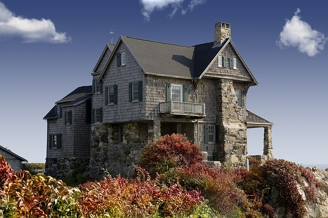

CheckMark Tutoring: How-To Guides for Canadians
CheckMark Tutoring: How-To Guides for Canadians What is siding?
Siding refers to the material that is put on the exterior of the walls of a home. It protects the home against weather, insulates the home and makes up the look of your home from the outside. The best type of siding will depend on your climate and geographic region, cost, durability, maintenance, style/aesthetics, etc. There are many different siding options available for houses today. Let’s look at some of the most common ones.
What kind of siding material should I look for when buying a home?
There are pros and cons to each type of siding material so there is not a perfect answer to this question. However, here is a list of common siding materials in order of what I believe is the best to the worst (factoring in durability, aesthetics and price) *note that the prices are estimates and are in CAD:
- Brick
- Brick combines low maintenance with durability. Brick SHOULD last you the lifetime of the house though there is the occasional mortar joint (gap between bricks filled with mortar which is a mix of cement, lime, sand and water) that needs to be fixed by ‘repointing’. The only maintenance required is a wash with the hose every once in a while.
- Brick also blocks out sound, is generally energy efficient (keeps heat in)
- Brick CAN be a bit harder to work with if you decide to do some renovations (e.g. adding a room, making a window bigger, etc.).
- COST: High ($8-15 per square foot)
- Cement Fiber Siding:
- This is a newer type of siding and will look and install almost exactly like wood siding butwithout the big cons of having wood siding (e.g. no rot or damage from insects, extremely durable and is pretty much maintenance free). It is not considered a cheap siding material and can be difficult to install since it is heavy and creates a lot of dust when cut.
- Requires expert installation and needs to be painted.
- COST: Moderate ($5-6 per square foot)
- Vinyl:
- Vinyl is a type of plastic. It requires very little maintenance and will only need a quick wash every once in a while to get rid of dirt. It is not nearly as durable as other options (e.g. brick) as it can break or warp due to heat (just ask my Dad what happens when you barbecue too closely to it!). However, it is the least expensive type of siding to replace. It is the most popular type of siding in Canada and the U.S.
- Can crack in cold weather
- It is not an insulator, so it usually installed over an insulating material.
- COST: Low ($3-4 per square foot)
- Stucco
- Think of the outside of a Taco Bell… that’s what Stucco looks like. Stucco is a mortar mixture (aggregate such as sand, binder such as cement and water). Stucco CAN be a good type of siding, but there have been many instances where cheap versions of ‘synthetic stucco’ have caused some homeowner nightmares. Stucco is cheap and requires less maintenance than wood, but when repairs are necessary the labour costs can be quite high. Dirt/water stains show easily and moisture/mold problems are an issue.
- COST: Moderate to High ($5-11 per square foot)
- Stone
- Similar to brick in that it is very durable and low maintenance. However, stone is very expensive. Stone veneer is a cheaper alternative that is used today (a man-made material that looks like stone)
- COST: Very high ($20-35 per square foot)
- Aluminum
- Aluminum siding appears very similar to vinyl. The maindifference is that aluminum color can fade and can also be dented, hence the reason why it is not as popular as vinyl siding. Its also noisier when rain hits it.
- It will be put on houses in overlapping strips (seals against weather) and has holes at the top so that you can fasten to the exterior wall
- A little more expensive then aluminum siding
- COST: Low to Moderate ($4-6 per square foot)
- Wood:
 Although people often like the look of wood on the exterior of a house, woodrequires a lot of maintenance since it can rot and insects/pests can get into it. Wood siding needs to painted/stained every 3 to 6 years and should be caulked (waterproof filler and sealant) periodically. It can also get expensive to replace wood that has rotted, split or warped.
Although people often like the look of wood on the exterior of a house, woodrequires a lot of maintenance since it can rot and insects/pests can get into it. Wood siding needs to painted/stained every 3 to 6 years and should be caulked (waterproof filler and sealant) periodically. It can also get expensive to replace wood that has rotted, split or warped.- Wood clapboard siding (long, thin, flat piece of wood with edges horizontally overlapping in series) has been used for centuries but has now been replaced with aluminum and vinyl siding for the most part.
- COST: Hardwood siding is moderately priced ($5-8 per square foot), clapboard and plywood siding has a low cost ($2-3 per square foot)